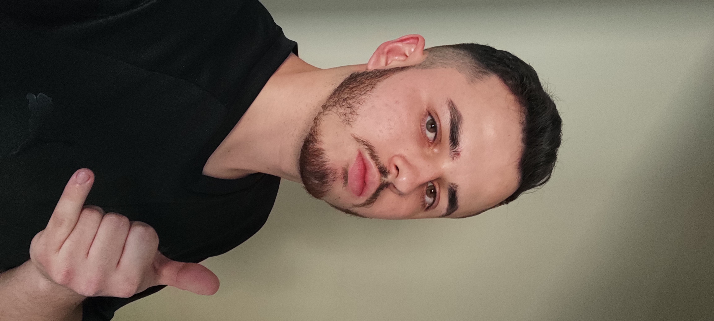

ABP FATEC 1 – AgriRS-Lab
Projeto desenvolvido no 1º semestre do curso de Desenvolvimento de Software Multiplataforma. Site para o laboratório do INPE.

Fatec Jacareí
Formação tecnológica focada em desenvolvimento de software multiplataforma, arquitetura de sistemas e práticas ágeis.
ETEC São José dos Campos
Formação técnica com foco em programação, banco de dados e desenvolvimento web.
Sou um profissional dedicado ao desenvolvimento web, com foco em criar experiências digitais memoráveis e funcionais. Atualmente busco minha primeira oportunidade na área de desenvolvimento de software.
“A tecnologia deve ser uma extensão da criatividade humana, não uma barreira. Cada linha de código é uma oportunidade de criar algo que faça a diferença na vida das pessoas.”
Projeto desenvolvido no 1º semestre do curso de Desenvolvimento de Software Multiplataforma. Site para o laboratório do INPE.
Projeto integrador do 2º período focado na criação de um chat-bot para a secretaria da Fatec Jacareí.
Nenhum projeto profissional adicionado no momento. Em busca da primeira oportunidade de trabalho.
Sistema web para gestão de pet shop e clínica veterinária com agendamento, controle de estoque e relatórios.
Portfólio desenvolvido durante o curso Técnico em Desenvolvimento de Sistemas na ETEC São José dos Campos.
Cisco Networking Academy
2025Gosto de ouvir músicas de diversos gêneros.
Gosto de jogar (Prefiro RPG).
Gosto de ler.
Gosto de assistir filmes.
Gosto de viajar.
Gosto de acompanhar esportes.